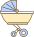

-
 1회기
1회기
나와 자녀의
관계 이해하기 -
 2회기
2회기
나와 자녀의
관계 증진하기(1) -
 3회기
3회기
나와 자녀의
관계 증진하기(2) -
 4회기
4회기
부모로서의
자신 모습찾기
- 시작하기
- 첫째,
우리 아이
성장기 - 둘째,
발달단계 부모역할
<임신·출산기> - 셋째,
발달단계 부모역할
<영아·유아기> - 넷째,
발달단계 부모역할
<아동·청소년기> - 정리하기
발달단계 부모역할 <영아·유아기>

영아기
유아기
영아기
(0세 ~ 만 2,3세)
# 부모역할
돌보아 기르기 : 아기와 애착을 형성하는 주요 시기
# 주요과업
이미지를 현실과 일치시키기 : 아이와 눈맞춤으로 부모의 애정을 확인
애착과 돌봄의 과정 : 세상에 대해 믿을 만한 곳이라고 생각하는 신뢰감을 위해 아이의 신호에 적절한 반응
부모의 자아정체감 정립 : 반복되는 아이와의 일상생활에서 자신을 잃는 것에 대한 두려움이 있을 수도 있기 때문에 부모로서의 정체감 형성 필요
부부 관계 재정립 : 이 시기에는 아기 돌보는 일에 아버지도 적극적으로 참여하여 자기 자신과 부모 사이에 균형 이루기
# 영아기 자녀 키우기 양육정보 TIP
"떼쓰는 우리 아이 이렇게 다루어 주세요."
떼쓰는 행동은 아이가 얻고자 하는 목표가 있을 때 어른의 관심을 끌거나 자기 마음대로 하기 위해서입니다.
떼쓰는 행동이 있을 때는 무시하고, 조용히 서서 떼쓰기 행동이 끝날때까지 기다려줍니다.
마트나 공공장소에서 떼쓰기 행동이 있다면 멀리 떨어져 아이를 지켜볼 수 있는 것이 좋습니다.
아이에 따라서 안아주기도 하고 진정시켜 주어 행동으로 표현하기 보다는 말로 표현하도록 가르쳐 주세요.
유아기
(만 3,4세 ~ 만 5,6세)
# 부모역할
부모의 말 세우기 : 자율성과 주도성 발달하는 시기
# 주요과업
자율성과 주도성 발달 : 세상에 잘 적응하고 자신의 능력에 대해 확신을 갖게 되는 것
훈육하기 : 의사표현, 신체적인활동이 다양해서 스스로 주장하고 고집을 피우기 시작. 부모가 정한 권위와 한계를 따르게 하며 옳고 그름, 해야 할 일과 해서는 안 될 일을 명확하고 일관성 있게 지도하기
권위세우기 : 부모가 정해야 하는 것과 자녀에게 허용해 줄 것인지 결정하고 지켜가기
# 유아기 자녀 키우기 양육정보
"훈육을 통해 허용되는 행동의 범위를 알려주세요."
위험한 행동을 하거나 고집을 피울 때 직접적이고 반복적으로 허락되지 않은 행동임을 알려주세요.
과격한 행동을 보이며 심하게 떼를 쓰더라도 일관되고 동일한 기준으로 단호하게 하되, 아이가 다치지 않도록 꼭 안아주세요.
훈육 뒤에서는 속상하고 화났을지 모르는 아이의 마음을 헤아려주고 달래주세요.
조심할 점!
・ 혼내는 사람과 받아주는 사람으로 부모가 역할을 나누지 마세요.
・ 무섭게 혼내는 것은 올바른 훈육이 아닙니다.
・ 밤 시간의 떼쓰기는 잠투정이 아닌지 고려하여 훈육보다는 빨리 재우는 것이 좋아요.